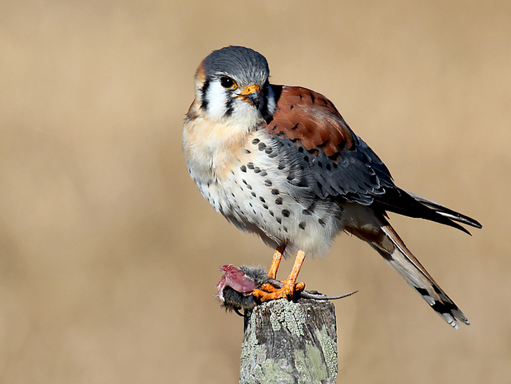

Quiriquiri
Nome científico:(Falco sparverius Linnaeus, 1758)
Nome comum: Quiriquiri
Classificação biológica:
Domínio: Eukaryota.
Reino: Animalia.
Filo: Chordata.
Classe: Aves.
Ordem: Falconiformes.
Família: Falconidae.
Gênero: Falco.
Espécie: Falco sparverius.
Nutrição: Carnívora.
Hábitos alimentares:Alimenta-se de uma variedade de presas, dependendo da disponibilidade local e da época do ano. Sua dieta inclui pequenos roedores, aves, insetos grandes (como gafanhotos e besouros), pequenos répteis e anfíbios. É um caçador oportunista, capaz de capturar suas presas tanto em voo quanto no solo. Em ambientes urbanos, pode ser visto caçando insetos e pequenos pássaros.
Morfologia do corpo:É o menor falcão das Américas, medindo entre 22 a 31 cm de comprimento, com uma envergadura de 51 a 61 cm. Pesa em média entre 80 e 165 g. Possui asas longas e pontiagudas e cauda relativamente longa e estreita. Apresenta dimorfismo sexual, com a fêmea sendo ligeiramente maior que o macho.
Comportamento:O quiriquiri é uma pequena ave de rapina ágil e habilidosa na caça, alimentando-se de insetos, pequenos mamíferos, aves e répteis. É territorial e caça a partir de poleiros elevados. São diurnos e geralmente solitários, mas formam pares na época de reprodução, construindo ninhos em cavidades de árvores ou estruturas feitas pelo homem.
Principais Presas:Pequenos mamíferos como camundongos, aves menores pardais e outros pequenos passeriformes, insetos grandes besouros, gafanhotos e libélulas, pequenos répteis lagartos e cobras pequenas e anfíbios.
Principais Predadores:Outras aves de rapina maiores, como falcões, águias e corujas. Além disso, pequenos mamíferos carnívoros, como guaxinins, podem atacar os ninhos para capturar os ovos e filhotes.
Locais habitados
Distribuição:Encontrado em Todos os Biomas do Brasil
.jpg)
Habitat:O quiriquiri é uma ave de rapina pequena, ágil e adaptável. Pode ser encontrada em diversos habitats, alimentando-se de insetos, pequenos mamíferos, aves e répteis. Eles caçam de poleiros elevados, são territoriais, diurnos e solitários, formando pares durante a reprodução.
Reprodução:A reprodução varia de acordo com a região, mas geralmente ocorre na primavera. Não constrói ninho próprio, preferindo cavidades em árvores, buracos em penhascos ou edifícios, e até ninhos abandonados de outras aves. A fêmea põe de 3 a 5 ovos, que são incubados por cerca de 29 a 31 dias. Ambos os pais participam da alimentação dos filhotes, que deixam o ninho após 30 a 35 dias. Os filhotes continuam sendo alimentados pelos pais por algumas semanas após a saída do ninho